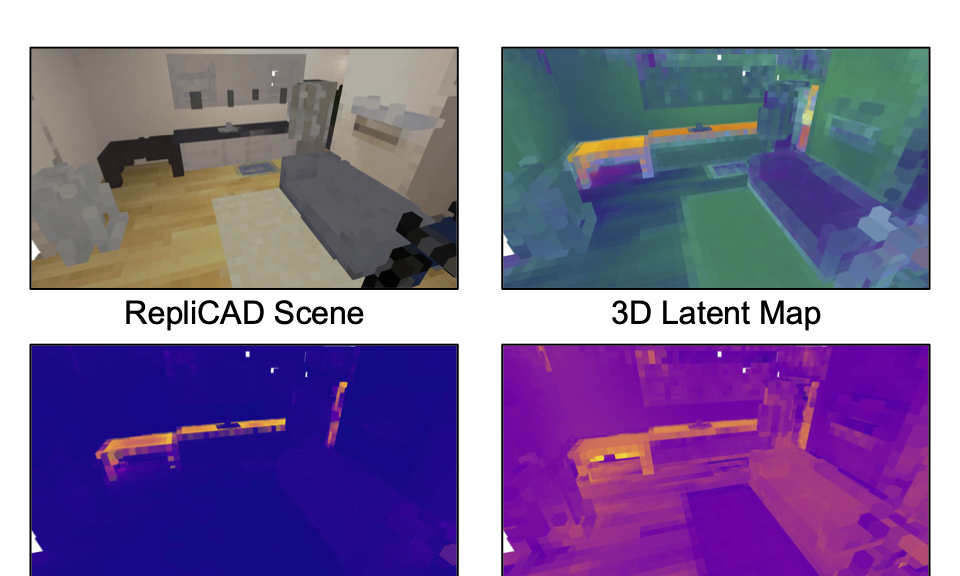
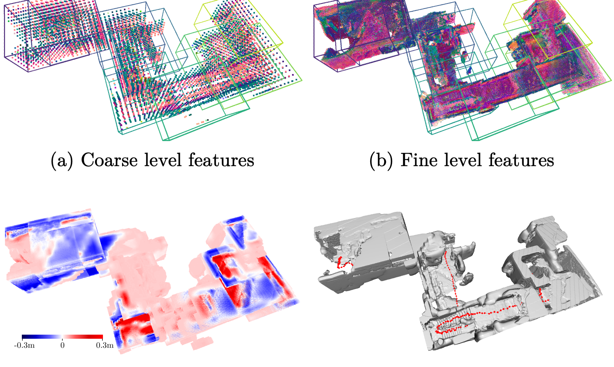
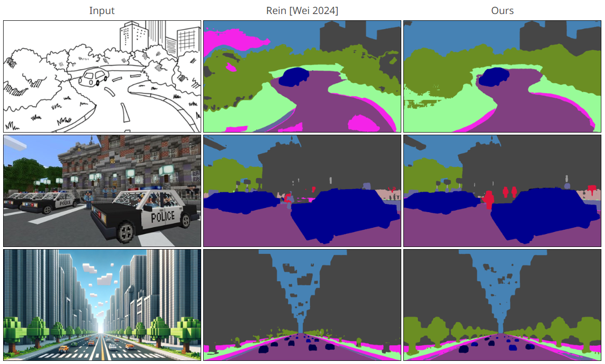
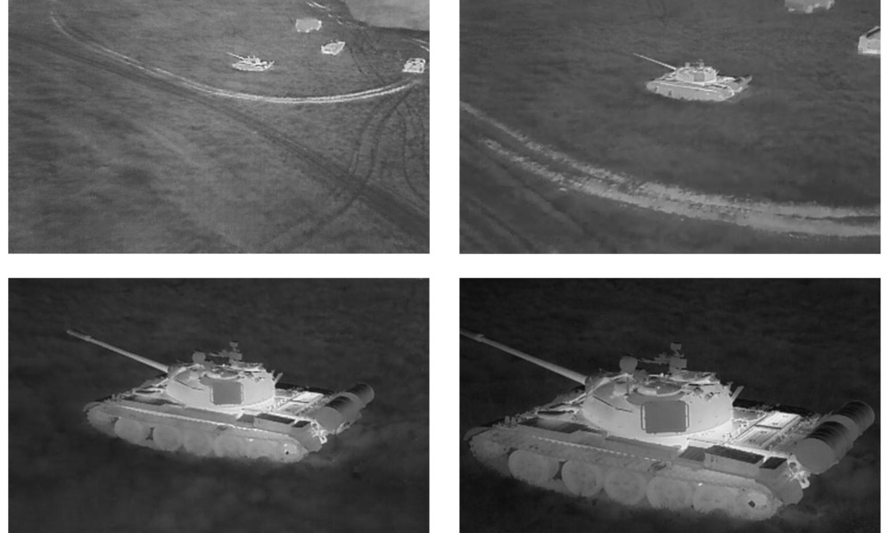

|
Hi! My name is Sunghwan Kimpronounced "Sung-Hwahn" (su as in "sun"). I also go by Shawn. I am a PhD student at UC San Diego, working at Existential Robotics Laboratory, advised by Prof. Nikolay Atanasov. Previously, I was a research officer at the Agency for Defense Development (ADD), the South Korean counterpart to the U.S. DARPA. I received my B.S. in Electrical Engineering and Mathematics (double major) at KAIST. My research goal is to enable mobile robots to perform long-horizon tasks in large-scale environments autonomously. I'm interested in the intersection of robot mapping and policy learning (e.g., RL, VLA). My current focus includes neural scene representations, neural SLAM, and reinforcement learning (e.g., world models). Email / Linkedin / Google Scholar / Github |
|
|
Papers sorted by recency. Representative papers are highlighted. * indicates equal contribution. |
|

|
Seeing the Bigger Picture: 3D Latent Mapping for Mobile Manipulation Policy Learning
Sunghwan Kim, Woojeh Chung, Zhirui Dai, Dwait Bhatt, Arth Shukla, Hao Su, Yulun Tian, Nikolay Atanasov ICRA, 2026 RSS 2025 Workshop on Mobile Manipulation (Oral) RSS 2025 Workshop on Learned Robot Representations (Best paper nomination) paper / project page |
|

|
MISO: Multiresolution Submap Optimization for Efficient Globally Consistent Neural Implicit Reconstruction
Yulun Tian, Hanwen Cao, Sunghwan Kim, Nikolay Atanasov RSS, 2025 code / paper / project page |
|

|
Textual Query-Driven Mask Transformer for Domain Generalized Segmentation
Byeonghyun Pak*, Byeongju Woo*, Sunghwan Kim*, Dae-hwan Kim, Hoseong Kim ECCV, 2024 code / paper / project page |

|
Texture Learning Domain Randomization for Domain Generalized Segmentation
Sunghwan Kim, Dae-hwan Kim, Hoseong Kim ICCV, 2023 code / paper |
|  |
Data Gathering Trials for the Development of Military Imaging Systems
Maria Niebla, Duncan L. Hickman, Eunjin Koh, Chanyong Lee, Hoseong Kim, Chaehyeon Lim, Sunghwan Kim Proc. SPIE, Electro-Optical and Infrared Systems, 2023 paper |

Template borrowed from Jon Barron. |